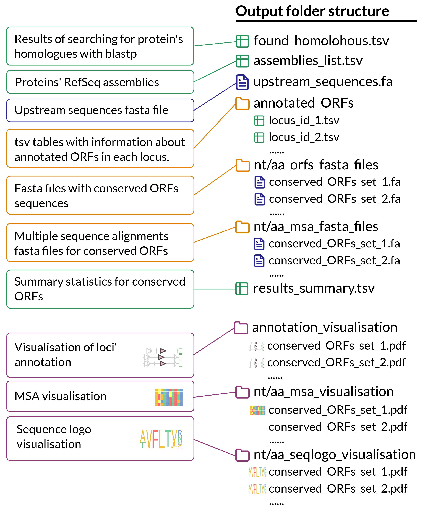
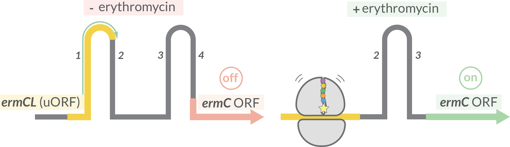
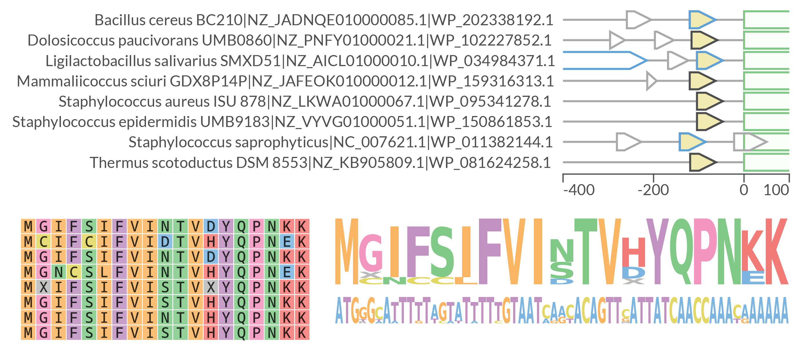
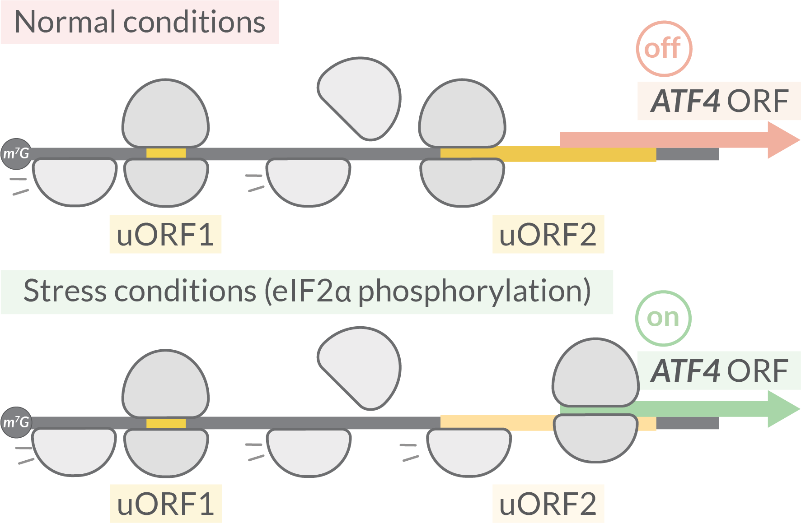
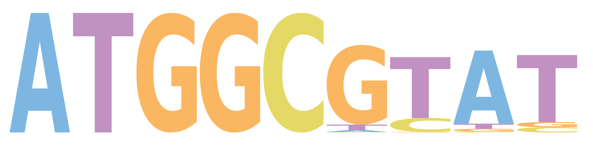
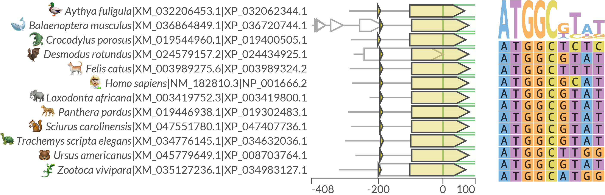

Example-driven guide
Here we show several usage examples of the uorf4u command-line interface for two well-known uORFs: ermCL (bacteria) and ATF4 (eukaryotes).
(See review articles about uORFs in prokaryotes and eukaryotes: Ito et.al. 2013 and Dever et.al. 2020.
Before start: The necessary sample data as well as adjustable tool' configuration files are provided by uorf4u at the post-install step:
uorf4u --data
If you work on a Linux machine after installation you should run: uorf4u --linux
This command replaces the tools paths (maft) in the pre-made config files from the MacOS' version (default) to the Linux'.
Output folder structure

Bacteria: ermCL
Expression of 23S rRNA methyltransferase ermC is regulated by translational attenuation: ribosome stalling on the ermC uORF (named ermCL) is inducible by erythromycin. The arresst alters the regional mRNA structure, exposing the ermC SD sequence and allowing translation of the ermC ORF.

Using a single RefSeq protein accession number as input
To test whether uORF4u will find the ermCL we can use only the RefSeq accession number of ermC protein as input which is WP_001003263.1.
uorf4u -an WP_001003263.1 -ul 400 -o ErmC -c bacteria,
All arguments, except -an, were optional. -ul was used to overrides the upstream region length to retrieve (default: 500). Output folder name can be set with -o parameter (default: uorf4u_{current_date}). We also used bacteria mode by specifying the premade configuration file with -c parameter.
uORF4u finds the expected ermCL and returns one set of conserved uORFs. Output contains MSA plot, annotation plot, and sequence logo:
Using a list of homologues as input
Alternatively, a list of homologues can be used as input. This is important for allowing a user to decide the breadth and depth of the search. In addition, it can be useful for creating compact output figures that can be used in articles. For such demonstration, we have chosen several ermC proteins from the previous run and used them as input:
uorf4u -hl WP_202338192.1 WP_102227852.1 WP_034984371.1 WP_159316313.1 WP_095341278.1 WP_150861853.1 WP_011382144.1 WP_081624258.1 -c bacteria -annot -ul 400
-annot parameter was used to show on annotation plot known ORFs annotated in the NCBI (shown with blue outlines). Note: List of homologues can be also written in a txt file (one accession per line) and used as input with
-hlf parameter.
Results with annotation plot, MSA visualisation and sequence logos:

Eukaryotes: ATF4
The expression of ATF4 (activating transcription factor) is regulated by two uORFs. After translation of the first uORF1, ribosomes are normally able to reinitiate translation at a downstream uORF2 after rebinding the initiating ternary complex (eIF2-GTP-Met-tRNA). Reduced levels of the ternary complex during stress conditions leads to the ribosome scanning through the uORF2 start codon and instead reinitiating at the ATF4 uORF.

uORF4u has two modes: bacteria (set as default) and eukaryotes that defined by pre-made configuration files. Archaea mode (no SD sequence annotation + retrieving DNA sequences as well due the absence of mRNAs data) will be presented soon or can be set manually within config files.
The main differences between two modes: 1. For eukaryotes there is no SD sequence annotation step and corresponding uORF filtering. 2. While sequences retrieving for found homologues we take only mRNAs (the tool uses regex to perform that which is set by refseq_sequences_regex in the config files. For eukaryotes it's set as '^[NX]M_.*' that means that only sequences with ids that start with NM_ or XM_ (mRNAs) will be taken in the analysis).
Using a single RefSeq protein accession number as input
Similarly to the bacteria' example, firstly we can use a single protein accession number as input:
uorf4u -an NP_877962.1 -c eukaryotes -o ATF4
We used eukaryotes mode by specifying the premade configuration file with -c parameter.
uORF4u finds both uORFs and returns (as always) MSA plots (uORF1 nt, uORF2 nt), annotation plots (uORF1, uORF2) and sequence logos. A nucleotide sequence logo for uORF1:

Using a list of homologues as input
Let's use again a subset of the found homologues to get a compact output.
uorf4u -hl NP_001666.2 XP_036720744.1 XP_024434925.1 XP_034632036.1 XP_008703764.1 XP_034983127.1 XP_019400505.1 XP_003989324.2 XP_003419800.1 XP_019302483.1 XP_047407736.1 XP_032062344.1 -c eukaryotes

Note: unfortunately, animal's emojis were added manually.
Using a fasta file with sequences as input
You can use a fasta file with sequences as input as well.
Command example with a fasta file obtained from previous run as input:
uorf4u -fa ATF4/upstream_sequences.fa -c eukaryotes
It is useful to note that when using nucleotide sequences as input, uORF4u can be used as a general conserved ORF search tool, that is, not necessarily upstream of any particular mORF. But be carefull with this mode, recommended range of sequences' length ~100-1000nt and number of sequences: 10-1000. uORF4u was not designed to perform conservation analysis on chromosome' size set of sequences.